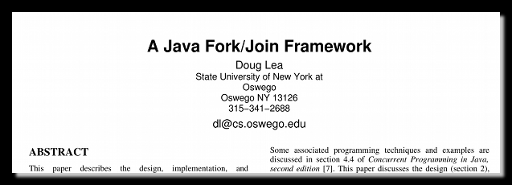

-
Scala Parallel Collections
Jim Powers
-
What is there to know?
.par
-
Easy-peasy
Start With
1 def getEntities(input:Vector[Document]):Vector[Vector[Entity]] =
2 input.map(x => extractEntities(x))
-
Easy-peasy
Start With
1 def getEntities(input:Vector[Document]):Vector[Vector[Entity]] =
2 input.map(x => extractEntities(x))
Add Power
1 def getEntities(input:Vector[Document]):Vector[Vector[Entity]] =
2 input.par.map(x => extractEntities(x))
-
Nested processing OK too
1 def wordScorer(documents:Vector[Vector[String]],scorer:String => Double):Seq[(Vector[String],Double)] = {
2 val wordScores = (for { doc <- documents.par
3 wordScore <- doc.par.map(scorer) }
4 yield (doc,wordScore)).seq
5 (Map[Vector[String],Double]()/:wordScores) {
6 (s,v) =>
7 s + (v._1 -> s.get(v._1).map(_ + v._2).getOrElse(v._2))
8 }.toSeq
9 }
-
Nested processing OK too
1 def wordScorer(documents:Vector[Vector[String]],scorer:String => Double):Seq[(Vector[String],Double)] = {
2 val wordScores = (for { doc <- documents.par
3 wordScore <- doc.par.map(scorer) }
4 yield (doc,wordScore)).seq
5 (Map[Vector[String],Double]()/:wordScores) {
6 (s,v) =>
7 s + (v._1 -> s.get(v._1).map(_ + v._2).getOrElse(v._2))
8 }.toSeq
9 }
-
What does .par do?
- Returns a parallel collection.
- Conversion very efficient:
O(1) time.
- "Bulk" methods on
parallel collections take advantage of multiple cores
mapflatMapfilterforeachforallreduce- etc.
- Inverse is
.seq (also O(1) time)
-
What are the parallel collections?
scala.collection.parallel.mutable.ParArrayscala.collection.parallel.immutable.ParRangescala.collection.parallel.mutable.ParHashMapscala.collection.parallel.mutable.ParHashSetscala.collection.parallel.immutable.{ParHashMap, ParHashSet}scala.collection.parallel.immutable.ParVector
-
How does it, um, work?
- Uses
Fork/Join from Doug Lea

- Adaptive Work Stealing
-
Adaptive Work Stealing
C = Number of cores
N = Number of parallelizeable units of work.
TN = Amount of time to serially complete the N units of work
Ideal: TN/C
-
Adaptive Work Stealing
But what if the computation time for each unit is not the same?
-
Adaptive Work Stealing
Start C threads and on each thread do:
while <work still to be done>
if Di not empty
let w = pop-front(Di)
<perform-work>(w)
else <steal work from the back of another deque>
loop while
-
Adaptive Work Stealing
Asymptotically approaches the ideal.
-
End of the presentation!
-
There are a few provisos, addenda, quid-pro-quo...
|
- Functions you supply need to be thread safe
- Especially is using shared state
- Several functions that take binary operations, such as
reduce, require the binary operation be associative
- Collections API does not officially expose ways to control the thread pool used by the Fork/Join scheduler (coming).
|
-
There are a few provisos, addenda, quid-pro-quo...
|
- Exception handling is, er... tricky.
- Java exceptions were not really designed with parallel processing in mind.
- Seek the out CompositeThrowable
- Hopefully obvious: order of processing in parallel collections is arbitrary
|
-
There are a few provisos, addenda, quid-pro-quo...
|
- The overhead of the Fork/Join scheduler is small but not zero.
- Sometimes you just won't get perfect linear performance improvements.
|
-
OK then, what are the use cases?
- Part of a data-processing pipeline
- Desktop application or command-line tool
- Basically any application where it is reasonable to assign all of the cores to performing parts of a single task.
-
And likely non-use cases?
- As part of a web application/service
- As part of a "highly-overloaded" message-passing application
- Suddenly grabbing all cores for a single operation may alter the response profile.
- Applications where most or all of the data process is strictly order dependent.
-
FIN